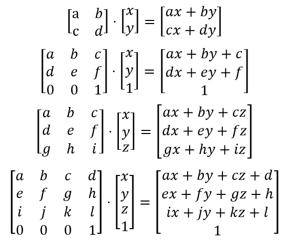

Pytorch: A Brief Description of the Machine Learning Framework
What is it?
What is Pytorch? As one enters the world of machine and deep learning, they will encounter the complexities of getting models (typically the collection of mathematical functions that make up the mind of an artificial intelligence) working correctly. Any developer knows software development comes with bugs, complicating the creation process. Luckily, there are frameworks to reduce the learning curve and error. A machine learning framework is a prebuilt library that allows developers to develop models faster without reinventing the wheel. Pytorch is a Python based open-source framework. It simplifies the process of creating a learning model by having several commonly used functions ready to use and built in connections in their data structures that can simplify developers’ code.
What can it do?
Its usefulness can be seen just from the complex math it handles for the developer. For example, there are several math functions used in models, such as matrix multiplication and SoftMax. As the matrices that make up models are often incredibly large and multidimensional, the math can quickly become a twisted mess to handle. As seen in the image below, just a simple multiplication of small matrices can lead to an enormous amount of work to compute. Instead of the developer relying on their math background (or lack of one) and creating and debugging these functions, they can instead rely on Pytorch to compute and return the correct matrices. This will save time, but Pytorch is more than a simple library.
Another benefit of Pytorch is the built in objects that allow your model to easily connect to different parts of itself. For example, back propagation (passing information back through the network with the chain rule) is how many networks learn through each iteration. This can be complex, and a naïve solution may become complicated in order to achieve the desired outcome. However, this framework allows this kind of essential function of neural nets to occur. When calculating the loss for the current round of training, simply calling “backward()” on the total loss will efficiently perform the back propagation correctly though out the network’s layers.
Matrix multiplication example
What is it made of?
The framework is written in C++ for speed and efficiency. Meanwhile, developers can code with it in Python, a simple and easy to use language. It was initially developed by Meta AI before joining the Linux Foundation. Pytorch is production ready, meaning that the models that are created in it are already tested and will perform as well as other professionally made software. It is used in real software products such as Tesla’s Autopilot. The image below shows an example of a Pytorch model driving a Tesla down a road in real life.
A Pytorch model driving a Tesla car.
What are its parts?
A major component of Pytorch is the Tensor. It is not the same thing as a tensor from classical mathematics. Instead, it functions as a feature packed array that can store n-dimensional matrices and perform operations on them. These Tensors can be operated on most GPUs, which results in higher efficiency. There is also support for sub types of Pytorch Tensors.
Another important component in this framework are the modules. These objects can implement optimizers and perform automatic differentiation on the network. They are also customizable, allowing for detailed modifications to get the most out of a model. Like the built in back propagation, these components make code simpler and prevent bugs that would come from developers recreating them from scratch.
As Pytorch is opensource, the community has created a robust ecosystem around it. Tools and libraries have been built out from the original framework for use as the field of artificial intelligence continues to rapidly evolve. For example, Glow is a tool that optimizes the performance on different hardware platforms. This is essential to improve runtimes as models tend to take long periods of time to train and any improvements are welcome.